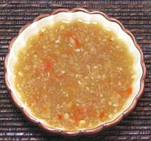

|
Tuk Trey Dipping SauceCambodia - Tuk Trey | ||||
| Makes: Effort: Sched: DoAhead: |
5 ounces * 15 min Best |
This essential Cambodian dipping sauce is also used in many recipes. It is pretty much the same as Vietnamese Nuoc Cham, and can vary in hotness, sweetness and sourness. The photo example is made without peanuts. | |||
|
|
3 4 1 2 1/2 1/4 2 2 |
cl T T T c T T |
Thai Chili, red Garlic Palm Sugar (1) Lime Juice Rice Vinegar Fish Sauce (2) Water Peanuts (3) |
Make: - (15 min)
|